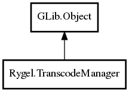

Object
TranscodeManager
Object Hierarchy:
Description:
public abstract class TranscodeManager :
Responsible for management of all transcoders: # Gets the appropriate transcoder given a transcoding target. # Provide all possible transcoding resources for items.
All known sub-classes:

Namespace: Rygel
Package: librygel-server
Content:
Creation methods:
Methods:
Inherited Members:
All known members inherited from class GLib.Object